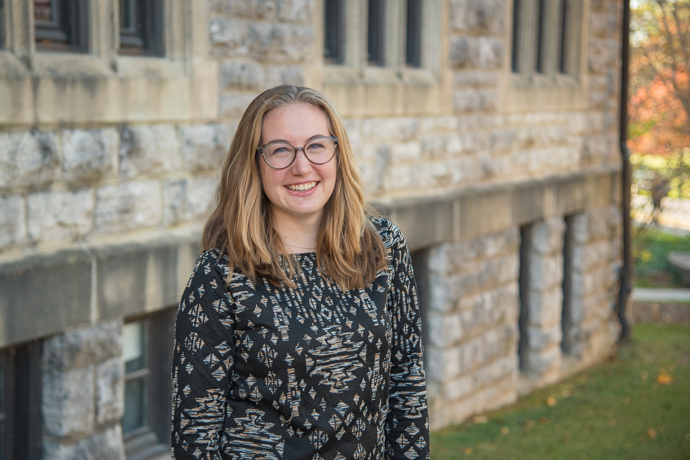
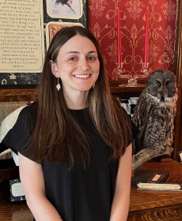

People
Principal Investigator
Katherine Corn
I am an evolutionary biologist and functional morphologist with a real passion for fishes. Questions I ask include: How do interactions with the physical environment facilitate the evolution of organismal diversity? What factors promote or slow morphological and functional evolution? How can we better use our knowledge of mechanical systems to model the evolution of the lineages that use them?
I received my PhD from the Center for Population Biology at UC Davis, where I worked with Peter Wainwright exploring the effect of coral reefs and feeding mode on the evolution of diversity in reef fishes. Following that I moved to Virginia Tech to postdoc with Josef Uyeda. As an undergraduate I worked with Adam Summers and Stacy Farina at Friday Harbor Marine Labs on a shark tooth saw and with Willy Bemis at Cornell on the development of sevengill shark teeth; I started off as an undergraduate at the small liberal arts college, Bard College at Simon's Rock. Aside from fish, I like hockey, baking pies, and sustainable agriculture. My Erdös number is 6.
Graduate Students
Summer Duba
 Ph.D. Student, School of Biological Sciences, Washington State University (2025 - present)
Ph.D. Student, School of Biological Sciences, Washington State University (2025 - present)
B.A. Biology - Christopher Newport University (2025)
I am a PhD student investigating how variations in morphology affect the feeding strategies and ecological roles of suction-feeding fishes, and the evolutionary consequences of these functional adaptations. I completed my BA in Biology at Christopher Newport University in Virginia, where I worked with Dr. Dave Collar to explore the evolution of elongate body shapes in fishes and was a member of the D1 Sailing team. Outside of science, I love reading fantasy novels, hiking, getting a sweet treat with friends, and triathlon training!
You can contact Summer by email at summer.duba "at" wsu "dot" edu.
Conner Museum
Jessica Tir
 Curator & Collections Manager, Conner Museum of Vertebrates 2024 - pres.
M.S. Biology, Washington State University (2023)
B.S. Ecology & Evolutionary Biology, Tulane University (2017)
A.A. Chemistry, Holmes Community College (2013)
I handle the day-to-day operations of the Conner Museum including fulfilling loan requests, preparing and caring for specimens, and managing data. I am particularly excited about creating and curating open-access biodiversity data, whether that’s via citizen science platforms or the museum’s Arctos databases. I am also passionate about SciComm and spreading the joy of nature!
My research background is in animal behavior with a focus on avian bioacoustics.
You can contact Jess by email at jessica.tir "at" wsu "dot" edu.